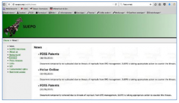

09.23.15
Posted in Europe, Patents at 5:53 pm by Dr. Roy Schestowitz
Summary: A call for translation of an important article that may help shed light on the modus operandi of the Investigation/Investigative Unit of the EPO, which works with Control Risks Group (CRG), the ‘British Blackwater’
Münchner Merkur, which wrote about the EPO several months ago, is mentioned by SUEPO’s public page for an article with the same headline as this one, “Streit im Europäischen Patentamt eskaliert”.
“We are still trying to learn how the EPO’s secretive Investigation/Investigative Unit is working as it may help explain at least some of the tragic suicides.”According to SUEPO, «Münchner Merkur reports on the threats of dismissal against Elizabeth Hardon, Chair of the Local Staff Committee in Munich and SUEPO Munich Chair: “If Ms Hardon is dismissed, new elections for the staff committee will take place, ‘But who would candidate, unless they are totally subsmissive?’”»
Can anyone help please provide us with a good English translation of this article?
“The article was published in the paper edition Nr. 215 of 18 September 2015,” SUEPO says (no translation available) and a “similar article was published in OVB Online.”
We are still trying to learn how the EPO’s secretive Investigation/Investigative Unit (I.U.) is working as it may help explain at least some of the tragic suicides. Internally, some refer to the I.U. as "the Gestapo", whereas Vice-President Željko Topić is referred to as “Putin”, based on German media. Neither comparison is flattering, but given what we have learned about both, the labels fit. Both will be the subject of ongoing investigations in the coming months. Input is required. █
Permalink
 Send this to a friend
Send this to a friend
Posted in Europe, Patents at 4:54 pm by Dr. Roy Schestowitz
Summary: The Topić connection to EPO-imposed and universally-induced censorship not just of news sites but also sites which speak about the censorship itself, or dare question the integrity of the EPO’s management
EARLIER today we noticed an update from SUEPO, which had updated its public page to include this translation of an important article from Heise Online, a leading German publication focused on IT, even GNU/Linux at times.
SUEPO said that this article “comments on the censorship imposed on SUEPO’s website by the management of the European Patent Office. The article recalls former unusual measures such as the covert surveillance with keyloggers and cameras of semi-public computers within the Office.”
Here is the article’s translation in full, images included:
English translation
Union accuses European Patent Office of Censorship
17.09.2015 18:02 Christian Kirsch
vorlesen
EPO-President Benoît Battistelli
The Office management are accused of having arranged for the staff union to have links to Websites removed which have been reporting on internal conflicts – among them to heise online. The Office denies the accusations.
The disputes between employees and management at the European Patent Office have led to a number of press reports this week. The staff union SUEPO had set up links on its Website to some of these reports, but now all that appear are statements to the effect that pressure from the EPO management has led to the links having to be removed. But the management, when asked, denied exerting any kind of influence in this connection. They say that the union alone is responsible for its Website. The report on heise online, for example, had been quoted in their own internal press review.

Allegedly, the union has been forced to remove links to messages at fosspatents.com and heise.de under pressure from the Office management.
But in the past the Office has done some unusual things. For example the EPO management arranged for public and “semi-public” computers in the Office building to be monitored by cameras and for keyloggers to be installed on them, as patent observer Florian Müller reported. The reason for this is that the management are trying to identify leaks which are spreading “defamatory and injurious” contentions about Vice-President Željko Topić. The allegation is that a number of criminal prosecutions are pending against Topić in Croatia.
As an international organization, the EPO is not subject to any national labour legislation or jurisdiction. Disputes between management and staff are the concern of the International Labour Organization in Geneva. Supervision at the EPO is exercised by a 38-person Administrative Council, who are delegated by the Member States of the European Patent Convention, and in the past they have always solidly backed the EPO management.
Administrative Council in conflict of interest
Critics suspect there are two reasons for this. On the one hand, a large part of the income for the EPO comes from the patent offices of the Member States. Rumours abound, for example, that Germany acquires some 100 million Euro per year, although neither the German Patent and Trademark Office nor the EPO will publish exact figures. On the other hand, members of the Administrative Council would also be reckoning on their chances of securing one of the very well recompensed EPO positions; the career followed by the German EPO Vice-President Raimund Lutz, for example.
On enquiry, the Federal Ministry of Justice confirmed that the Basic Law applies equally to EPO employees, and in particular freedom of speech. The Ministry would make no comment, however, on the present state of affairs.
The article neglects to mention EPO censorship of SUEPO E-mails and also the Office-wide block against Techrights (affecting nearly 10,000 of the biggest stakeholders). These are serious omissions. The inclusion of these would have helped demonstrate how far back these censorship tactics go and how far — in terms of breadth and severity — they generally go. Željko Topić is called by some within the EPO “Putin”; these censorship tactic only serve to reinforce that stigma/comparison, given that the EPO’s management is now officially trying to use Topić as means of justifying the unprecedented censorship, suppressing links to anything which even speaks about this censorship.
The EPO’s management is cleatly out of control and out of touch. █
Permalink
Send this to a friend
Posted in Europe, Patents, Videos at 2:22 am by Dr. Roy Schestowitz
“Battistelli, what the helli?”
Summary: The Belgian TV network featured a show which was making fun of Battistelli earlier this month (see the above)
THE gradual spread of the EPO scandals coverage to media outlets all across Europe made this inevitable. We saw this in newspapers, radio, and now it’s on television too. We also saw it in various parliamentary systems, both EU institutions and institutions of member states. It spreads like fire.
The above 10-minute video can be summarised using the following frames:
Someone on IPKat has taken the above screenshots from the video and provided explanations/interpretations in simple English. Going by the pseudonym “Roufousse T. Fairfly” the commenter said:
It required some effort before you can finally look at it, but it was worth it.
It is a sequence from a program on Flemish private TV. The invited star on that particular episode was a singer.
The middle of the show is segment titled “sla de sloeber“, which loosely translates to “hit the rascal”.
I wasn’t familiar with the term “sloeber”, which has many possible, and mostly unflattering, synonyms:
1) Arme kerel
2) Arme
3) Belgisch bier
4) Bier van hoge gisting
5) Een goede vent
6) Hals
7) Iemand die veel tekort komt
8) Pauper
9) Persoonsbenaming
10) Slokop
11) Smeerlap
12) Stakker
13) Sufferd
14) Sukkel
15) Smeerdoos
16) Schooier
17) Schoelje
18) Schlemiel
19) Schurk
20) Stumper
21) Vlegel
22) Zeer arm mens
23) Zielenpoot
The guest is invited to select between one of three rogues:
1) One Michel D., who trafficked blood diamonds into Belgium;
2) Benoît Battistelli, who needs no presentation;
3) Mexican gangster El Chapo Guzmán, who recently escaped a maximum security penitentiary through a two kilometer-long tunnel.
Specimen #2 is chosen, and the singer reminisces about his experiences working for a French company, if I understood correctly.
After an interminable number of commercials equal or greater than 14 (I believe I lost count), the show returns with the effigy of the chosen one affixed to a punchball machine.
Once the scoundrel has been properly sent flying by the avenger’s fist, the calculated result is entered into the high score table.
Pretty silly, but it shows that BB and the EPO are becoming household names, and not thanks to the pointless and expensive non-events called the “inventor of the year awards”.
I close my eyes and picture a scene in a Munich penthouse, with a group of scared stiff assistants drawing straws to designate a “volunteer” for showing and translating the video to Le Président…
Cut to London near the Shard, in a discrete office… A phone rings impatiently… Hullo… Yes? A contract? In Ghent? … OK, sure, we promise we won’t send those bozos who totally bungled that job back In Bruges…
Another pseudonym, “Old man of EPO”, said in response to the above on Monday: “Have to say I’m surprised that Vier had heard of BB. Their intro to him is a bit OTT but, hey, there’s no such thing as bad publicity apparently so I guess it’s not that bad (?) to be matched with a murderous Mexican gang leader. Or maybe not…”
Whether it is negative or positive publicity, well… we shall let readers/viewers decide. Being compared to criminals can hardly be framed as positive because of the legal nature of the comparisons, insinuating perhaps that all of the above three characters belong in a prison cell (if not worse) for very heinous and expensive crimes. █
Permalink
Send this to a friend
09.22.15
Posted in Audio/Video, Europe, Patents at 7:02 am by Dr. Roy Schestowitz
Summary: The infamous Investigation Unit (I.U.), which secretly bullies staff of the EPO with notorious interrogation techniques under virtually no oversight, is described on Dutch radio
NPO Radio 1 covered the EPO scandals 12 days ago. Several people who are aware of what is happening spoke about the subject and several days later SUEPO covered it, as its lawyer too was on the show. To quote SUEPO, “Ms Liesbeth Zegveld, SUEPO lawyer and Mr John Kerstens, Member of the Dutch House of Parliament (Tweede Kamer PvdA) were interviewed on 10 September 2015 on the Dutch channel Radio 1 over the “unhealthy working environment” in the European Patent Office.
“The audio interview is hosted here (archive).”
To quote the English part of the transcript (local copy just in case of yet another censorship induced by threats):
English translation
NPO Radio 1
“Unhealthy working environment in the European Patent Office in Rijswijk”
Eric Corton:
But first: the European Patent Office in Rijswijk.
Jingle: De Nieuws BV
Willemijn Veenhoven: Once again, an employee of the European Patent Office has committed suicide. The 42-year-old man ended
his life on the last day of his summer holidays. The EPO staff union, SUEPO, blames the “unhealthy working environment” for contributing to the fifth EPO employee suicide in three years.
EC:
Liesbeth Zegveld, good afternoon. You are SUEPO’s lawyer.
Liesbeth Zegveld:
Good afternoon.
EC:
You represent the union’s members. Can you tell me about the EPO and what is happening in Rijswijk?
LZ:
EPO is an international organisation with offices in five countries, the largest of which are located in Munich, Germany and Rijswijk, The Netherlands. In total, EPO employs about 7,000 people, 50 percent of whom are represented by the staff union. Their job is to approve patent applications, which is a rather specific line of work. They have found themselves under the regime of Mr Battistelli, a Frenchman. The working conditions and the atmosphere at EPO have been extremely unpleasant for years now. Even after a considerable amount of legal action, they have not improved. What I am seeing, and what the union is seeing, is that things are actually getting worse.
EC:
So this is not a Dutch organisation. It is a European organisation, located in The Netherlands. Could you give me an example of the working conditions?
LZ:
One of the most important problems is that the staff is not involved in the making of changes that affect them directly. Take for instance decisions regarding pensions or sick leave: these are things that affect them personally. These people are bypassed, and that is a big problem. Another problem is the extremely heavy workload. As a result of cutbacks, the pressure caused by the daily amount of work to be done is only increasing. The staff suffer from this, and they do not have a way to speak up about it or discuss it with one another. Obviously, this is detrimental to the working environment.
EC:
SUEPO sees a direct correlation between the workload and the five staff suicides over the last three years. Is there any way this conclusion could be proved?
LZ:
So far, there have been two suicides at Rijswijk. One of these people committed suicide during working hours. I don’t know if there have been inquiries into whether these suicides were related to the working climate, including the latter one. The point the staff union is trying to make is that the atmosphere at work is so hostile and the number of suicides among staff so high that it’s time for EPO to find out whether there is a correlation. That is what the management has been repeatedly urged to do, which they have declined.
EC:
They aren’t about to do that. So the president… I’m sorry, go on.
LZ:
“So far, there have been two suicides at Rijswijk. One of these people committed suicide during working hours.”
–Liesbeth ZegveldThe Labour Inspectorate will try to visit the office to have a look at the working environment, but they are kept out because the EPO is a European organisation. This way, any and all questions to the EPO are met with silence. Meanwhile, the question remains: Are the suicides and the working conditions related? I do stress that this relationship has not been proved.
WV:
What I am thinking right now is that people’s working conditions have to be dreadfully, but dreadfully hostile for them to resort to suicide. You are very familiar with this case: Can you imagine that the working environment really is that toxic?
EC:
For people to take such measures?
LZ:
I don’t know the case of the man who recently committed suicide. What I do know is that the atmosphere is unbearably hostile. I can confirm that. As lawyers, we try to aid and assist the staff and the workers in legal matters. This is the first time I am confronted with the limits of legal proceedings. Something has to happen right now, because the situation at these offices is getting out of hand. I’ve gotten an extremely clear sense of that. An example of this is that the EPO created an internal Investigative Unit to interrogate and investigate individual workers’ behaviour. This Unit was initially created in 2013 to have only five members and carry out investigations into severe cases of sexual harassment and fraud. So far, there have been 71 investigations in 2015. A considerable number of those were aimed at staff union members. People are put under investigation, which they are not allowed to discuss. A rather bizarre fact, as this type of confidentiality is mostly meant to protect the person under investigation, but they can’t even talk about it themselves. They cannot go public about this. These proceedings make people feel extremely intimidated. They run the risk of being fired, or if they have already retired, of getting a one-third cut off their pension. There are a lot of these investigations going on right now, a few of which I am involved in. They are baseless investigations that involve employees being asked for an interview without being told what they are being accused of and without being given any documents relevant to the investigation. These employees are confronted with all of this, a report is drawn up, and that report goes straight to Mr. Battistelli. The employee is left to await their fate, which may well be termination.
EC:
So the President, Mr. Battistelli, is deaf to any criticism. He considers complaints about the workload as nothing more than propaganda. But we have staff unions, we have the Labour Inspectorate, we have great lawyers like you. How does this organisation manage to keep you all locked out?
LZ:
Again, the EPO is an international organisation. Their offices are not just in Rijswijk, but also in Munich, Vienna and two other countries. This type of organisation’s physical premises are not part of the country they are in. The Netherlands office, for instance, is in Rijswijk, but is outside Dutch jurisdiction.
EC:
They’re not part of The Netherlands.
LZ:
“But wouldn’t that mean that a company from India or wherever could have an office in The Netherlands, abuse their employees and be exempt from Dutch law? Why are they immune?”
–Eric CortonRight. That means Dutch law, Dutch judges and the Dutch Labour Inspectorate have no authority over this office.
EC:
But wouldn’t that mean that a company from India or wherever could have an office in The Netherlands, abuse their employees and be exempt from Dutch law? Why are they immune?
LZ:
These aren’t national organisations that were started in a different country but have foreign offices in several countries. These organisations are intergovernmental and have been founded by several states. So if The Netherlands, Germany, Austria and Belgium decide to found such an organisation, there is no judge that can have authority over it – only the organisation itself, or an international court of law. Of course, a self-governing organisation must govern itself correctly. And this is what we keep telling The Netherlands: every country washes its hands of it, and Battistelli is free to do as he pleases. But it’s an international organisation, so they have to take care of it themselves. Then when it gets out of hand, the International Court in The Hague, after a case that we won gloriously, rules on February 17 of this year: ‘Battistelli does
not have the right to monitor email communication, he does not have the right to decide on the duration of strikes, he does not have the right to exclude the union from negotiations with employees. Things have to change.’ At which The Netherlands as well as the organisation itself turned a deaf ear to the Court’s ruling and continued as normal. Sadly, that is the way the judicial system works.
WV:
I’m sorry to interrupt, but I would like to hear from Member of the Dutch House of Parliament John Kerstens
of the PvdA party. Good afternoon.
John Kerstens:
Good afternoon.
WV:
“The English term Investigative Unit has been put in German by the staff themselves as ‘the Gestapo’.”
–John KerstensYou have previously voiced your concerns about this organisation’s working conditions to State Secretary Sharon Dijksma. What did she promise you at that point?
JK:
Really, we’ve knocked on the doors of everyone in the Cabinet by now, including Minister van der Steur and Minister Asscher. Things have been less than ideal for a while now at EPO, and that is just about the greatest understatement I could make. As Ms Zegveld said, people feel intimidated and unsafe. The English term Investigative Unit has been put in German by the staff themselves as ‘the Gestapo’.
EC:
Incidentally, we have tried to talk to people at the organisation, but no one wanted to talk to us.
JK:
That’s as I would have expected. We have contacts at the European Trade Union Confederation and we are in touch with the workers themselves: It’s not that they don’t want to talk, but they don’t dare open up for fear of investigations or suspension. The Cabinet’s reaction has been twofold: They are worried about this situation, but as Ms Zegveld noted, these international organisations enjoy certain kinds of judicial immunity. Which, by the way, multinational companies do not. Earlier, the impression was given…
EC:
“So could this be related to financial gain, perhaps?”
–Willemijn VeenhovenNo, you’re right.
WV:
So could this be related to financial gain, perhaps? It’s been estimated that the Dutch government profits greatly from the EPO. The Office being in the Netherlands, the country apparently makes 855 million Euros off it each year. Could that be a reason they are left to do as they want?
JK:
The Netherlands has the ambition to be a haven for international organisations, such as international courts and organisations like the EPO. But the law dictates the premises of organisations are inviolable without permission from the President. In this case, that means the Labour Inspectorate cannot enter the premises, for instance to carry out an investigation.
WV:
But do you think money might be the issue here?
JK:
No, I don’t think it is. But the problem in this situation is that these external parties have to be given permission by Battistelli, who is himself a part of the conflict and as such not at all interested in cooperating with them. The Dutch Cabinet has made a number of attempts: they have discussed the issue with the governing body of the EPO, the Administrative Council, made up of representatives of all the states who founded the EPO. The Netherlands have also attempted to start a dialogue on social issues inside the organisation itself. One of the participants involved is in fact a representative of the Administrative Council. But not much is happening. We have to…
EC:
Yes, what is going to be the next step? If you’ve already spoken with Mr. van der Steur and asked Parliamentary questions of Ms. Dijksma, what’s next?
JK:
“Personally, I don’t think it’s Mr. Battistelli’s prerogative to allow or disallow the Labour Inspectorate entry into the EPO. It is the Administrative Council’s decision.”
–John KerstensI’ve asked three sets of Parliamentary questions about this issue, and we get a small step further every time. Yet, there’s no solution in sight, so we’re going to have to put on a little bit more pressure. Personally, I don’t think it’s Mr. Battistelli’s prerogative to allow or disallow the Labour Inspectorate entry into the EPO. It is the Administrative Council’s decision. If The Netherlands is liaising with the Council to solve these issues, then for my next question to the Cabinet I will be asking them to get permission from the Council to enter the EPO and at least clear some things up.
EC:
Member of the Dutch House of Parliament John Kerstens of the PvdA party and Liesbeth Zegveld, SUEPO’s lawyer. Thank you both very much.
JK:
You’re welcome.
“Transcripts in English, French and German are available by scrolling through the document,” SUEPO notes, so just about everyone in Europe can read it. It’s imperative that everyone in any field of technology, which is inevitably impacted by European patents, reads this.
For those who have not been keeping abreast of this long series of articles, our Wiki is a good place to start. The EPO may, unless proven otherwise, be Europe’s most corrupt institution right now. █
Permalink
Send this to a friend
Posted in Europe, Patents at 6:22 am by Dr. Roy Schestowitz
The infamous Streisand estate. Copyright (C) 2002 Kenneth & Gabrielle Adelman, California Coastal Records Project.
Summary: The management of the European Patent Office (EPO) is still trying to suppress negative messages about managerial failures, violations and abuses, thereby serving to only increase media coverage (newspapers, radio, television) of increasingly well-known and widely-covered scandals
THINGS have been rapidly heating up and escalating at the EPO as of late. The public pages of SUEPO are almost self-explanatory, but some context and background are needed. This post will attempt to summarise the latest developments.
The management of the EPO has chosen not to listen to staff, instead attacking not only staff but also journalists. Benoît Battistelli’s right-hand gangster, Željko Topić, has said that “SUEPO has no standing in this office. SUEPO has no role to play in this office.” These people are obviously not qualified to manage, as they don’t treat their staff like a treasure, an asset, or even a “human resource” (to use gradually more demeaning terminology) but as a nuisance. It’s no wonder they are driving a lot of the talented people away. These are highly qualified people. They’re not a dime a dozen, not even a million (euro) a dozen (per annum).
Certain SUEPO leaders are now formally responding to the menacing messages from the wife of Battistelli's INPI buddy, titling this episode “SUEPO publication concerning an investigation” (too gentle a term). To quote the statement from the public site: “Ms Bergot, Principal Director Human Resources at the European Patent Office, has sent highly threatening letters to Mr Michels, SUEPO Central Chair, and Ms Hardon, SUEPO Munich Chair, following a SUEPO publication concerning an investigation in which Ms Hardon was summoned for interrogation as accused.
“Ms Liesbeth Zegveld, SUEPO lawyer, represents Mr Michels in this matter and Ms Hardon in the investigation. She has sent two letters of reply to Ms Bergot.
“A copy of the reply on behalf of Ms Hardon can be found here and the reply on behalf of Mr Michels can be found here.”
In case of (un)expected takedown demands (this happened before), we are making local copies of the PDFs:
Yesterday morning SUEPO finally shared (after suppression by legal threats from the EPO) this article in German. Benoît Battistelli’s oppression/suppressions have clearly become major IT news (it’s not about labour rights anymore). A lot of people in the media finally become involved these days and the EPO’s management tried to prevent staff from reading journalists’ work. How pathetic is that? As SUEPO put it, “Heise Online comments on the censorship imposed on SUEPO’s website by the management of the European Patent Office. The article recalls former unusual measures such as the covert surveillance with keyloggers and cameras of semi-public computers within the Office.”
“EPO leadership [is] out of control,” wrote Florian Müller, “now SUEPO has even had to remove a link to Heise, Germany’s most-read IT news site.” When news is treated as treasonous and there is a taboo, then the institution itself is built upon lies and corruption. The EPO was strongly in favour of the press when it effectively bribed Les Echos to become its "media partner" (i.e. shameless PR), but it blocks/censors links to Heise (German IT) because there is objective analysis there. There are no EPO payments (from taxpayers) on the table and no strings attached.
Any external observers ought to early see who’s the bad side here. The management of the EPO is now censoring information using self-censorship tactics. This self-censorship is motivated by fear, due to active intimidation and expected retribution (reign by example). This is probably why SUEPO does not link to Techrights so often (the only site to be completely banned all around the EPO’s networks, for the first time ever). There would be a lot more damning information about the EPO’s management out there if it wasn’t for reprisals. These people are thugs and they are using the same tactics that thugs are using.
Days earlier SUEPO took note of further media coverage of these scandals, reaching even European radio. As we shall show at a later date, this also became a television topic (Benoît Battistelli was being ridiculed on European television after becoming somewhat synonymous with “villain” in central Europe).
Suffice to say, patent lawyers sometimes continue to support Battistelli. One ‘magazine’ with its most shameless patent maximalists does some victim-blaming (blaming EPO staff) in this article and this accompanying tweet which says: “There are problems at the @EPOorg, but the staff union’s relentlessly confrontational approach is getting nowhere.”
Who is being “relentlessly confrontational”? The staff or the management? Someone surely missed the full story.
SUEPO now calls for “Supervision of Data Protection at the EPO,” having discovered that data protection at the EPO is an utter joke (even visiting patent lawyers are under surveillance, not just staff). “Recently,” it explained, “a letter from Ms Andrea Vosshoff (Bundesbeauftragte für den Datenschutz und die Informationsrecht) to Ms Renate Kunast (Vorsitzende des Ausschusses für Recht und Verbraucherschutz) came to our attention. In this letter Ms Vosshoff asks for attention to certain weaknesses in the data protection set-up in the EPO. She asks the above mentioned committee for support in addressing the issues.
“SUEPO intends to write a letter in support of this initiative, requesting to be heard in the matter. An aspect that seems thus far to have been overlooked is that Art. 20(1) EPO PPI seems to provide for a cooperation with the “competent authorities” in health and safety regulations and “similar regulations”. The latter would seem to cover data protection regulations.”
Given the EPO’s record of taking down material using threats, we have decided to mirror this here as well:
Lastly, SUEPO’s views on “ILO-AT workload” ( Administrative Tribunal of the International Labour Organisation) were expressed 5 days ago. “The number of ILO-AT member organizations continues to increase totalling 60 today as opposed to 25 in 1990 and 40 in 2000 – thus raising concerns about the continued capacity of the Tribunal to carry out its responsibilities effectively.”
It’s too slow to protect staff and also, to make matters worse, the EPO’s management won’t obey rulings, orders, laws, etc. The management led by Battistelli views itself as acting with impunity or operating above the law.
“The ILO intends to hold a debate,” continued SUEPO, “and prepare a guidance paper highlighting any difficulties encountered by the Tribunal in managing its workload. In preparing this paper, the ILO has submitted a questionnaire to be filled by all stakeholders.
“SUEPO’s answer to the subject questionnaire can be found here [see below]. It represents the views of SUEPO and was prepared with the input from the following staff associations/unions: FICSA, WHO, WTO, WIPO, WMO, OPCW, IFAD, BIODIVERSITY INT, ESO, CERN and EMBL.” Here is a local copy of it:
In the coming days we intend to highlight some more media coverage of these affairs and we will work to ensure that SUEPO cannot and will not lose its voice due to bullying by Battistelli and his circle of aggressors. The more adamant they become and the more aggressively they crack down on information, the more this information will spread (with additional copies thereof). Required reading. █
Permalink
Send this to a friend
09.21.15
Posted in GNU/Linux, IBM, Patents at 8:57 am by Dr. Roy Schestowitz
IBM’s infamous love of patents outweighs the company’s publicly-professed love for Linux
Summary: A timely reminder that Big Blue is no true friend of GNU/Linux and other Free software projects, just an opportunist that uses the Linux brand and wants to make the platform a commodity (for servers that run IBM’s proprietary software and use IBM-branded hardware)
Manny Schecter, the Chief Patent Counsel from IBM, is lobbying for software patents in India, based on statements like this one. IBM wants software patents everywhere (not just the US), quite frankly as usual. It also did this in Europe and in New Zealand. The evil side of IBM is clearly Free software-hostile, as it lobbies for laws that are inherently ruling out Free software, or make it incredibly hard to adopt. The article that Schecter linked to says that “Srikant Sreenivasan, co-founder at Mumbai-based cloud technology company CloudLeap Computing Pvt. Ltd, spent four months re-engineering something his company had already built after realizing that they had unknowingly infringed on a patent filed by a multinational company.”
Well, like IBM…
“CloudLeap had to reinvent the wheel since it was catering to clients in the US, where the patent law protects all software, unlike in India, where software was so far patented only if it was used in conjunction with an embedded chip or system.”
Again, like IBM…
We have been writing a great deal about the ugly side of IBM for nearly a decade. The above just serves to remind us that IBM has not changed its ways.
To say that IBM is a “big company” and that its patent policy does not reflect or extend to technical staff is akin to the same apologetic gestures offered by Microsoft boosters when it’s pointed out Microsoft sues GNU/Linux with patents (still). █
Permalink
Send this to a friend
Posted in Europe, Patents at 7:42 am by Dr. Roy Schestowitz
Summary: More press coverage about the terrible situation at the European Patent Office
HR Praktijk, yet another Dutch site, joins at least a couple of newspapers with their reports in the country which houses EPO headquarters. Below we make our permanent record of a Dutch article with various translations. The English translation of the article is as follow:
11 September 2015, From: Jesper van Wijk, Via: De Volkskrant
EPOrg employee suicide possibly caused by poisoned working conditions
Staff union SUEPO is raising the alarm on the recent suicide of an employee of the European Patent Organisation (EPOrg) in Rijswijk. De Volkskrant reports that poisoned working conditions may have contributed to the suicides of five employees at the European organisation.
Staff representatives previously raised serious concerns on the policies of French EPOrg president Benoit Battistelli. SUEPO claims that under his reign, work pressures have been radically increased and that Battistelli has unilaterally forced through changes.
Social dialogue
The Netherlands and other members of the European Union have voiced concerns onhardened social climate within EPOrg. “Partly due to these signals, management and staff representatives have entered into a social dialogue,” State Secretary Dijksma of Economic Affairs wrote to the Dutch House of Representatives in July.
The situation has not improved since. In a letter to the 38 EPOrg country representatives who supervise the organisation, the union is now again raising the alarm on the death of an employee who worked at a location in Rijswijk. This is the fifth time in a little over three years’ time that EPOrg employee has committed suicide. In 2013, an employee from the Rijswijk office jumped from the seventh floor of the building during work hours. The other three incidents were of employees of the EPOrg headquarters in Munich, according to the Dutch newspaper Volkskrant.
Possible measures
On 26 August, the union wrote Battistelli a letter requesting a conversation on possible measures to improve the work situation, but so far he has refused. “It’s tragic that SUEPO is again trying to abuse a personal tragedy to stir up controversy in a situation that calls for sympathy,” Battistelli wrote to the union. “The parallel you seem to want to draw between the death of a colleague and recent reforms and the working atmosphere in general is wholly inappropriate.” SUEPO states that a direct link between the suicide and the working conditions has yet to be established, but that the labour inspectorate should be granted the opportunity to research the tragedy.
As we are going to explain later this month (despite us being on vacation), there are many actions in progress and this awareness campaign is even reaching television, not just radio and newspapers. The EPO’s management increasingly finds itself becoming the story. Not patents it grants are the story but the corruption of the management itself. The amount of public pressure has become proportional to the degree of repression and the more the EPO tries to suppress publication (or staff awareness of these issues), the worse it is getting. Some have already pointed out the sharp rise (an order of magnitude) in suicides — a fact that the bureaucrats will find incredibly hard to refute. It is merely a side effect or a symptom of the EPO going rogue. █
Permalink
Send this to a friend
09.17.15
Posted in Europe, Patents at 2:15 am by Dr. Roy Schestowitz
Chinese labour and Internet standards in Europe
Summary: The management of the European Patent Office (EPO) continues to increase its repressive assaults on EPO staff, essentially blocking access to additional sites which explain what the EPO is really doing and why this is wrong
COINCIDING with staff protests/demonstrations (but not strikes) that took place on Tuesday, the muzzling of Florian Müller gets reported. “EPO leadership pressured SUEPO to remove link to my blog from its homepage,” he told me earlier this week, shortly after writing that “In July it became known that the EPO blocked examiners’ access to TechRights” (source), correctly adding that it merely invokes more backlash. The “recommended reading for whomever at the EPO [...] prohibit links to this blog: the Streisand effect.”
The EPO is possibly trying to block (censor) evidence of the censorship itself. That’s how pathetic they’re becoming now. Are they really willing to go down this rabbit hole?
“Document temporarily removed due to threats of reprisals from EPO management,” says SUEPO’s public page in numerous places (with slight variations). “SUEPO is taking appropriate action to counter the threats.”
Well, welcome to the European Union’s most corrupt organisation, where censorship is part of the plan to hide evidence of the corruption, and sites that cover the censorship are themselves being censored, too. China or Russia are where one might expect such behaviour, not the European Union.
So, the EPO is now censoring/filtering/blocking yet another blog, and for what? It’s not as though the staff cannot access these sites from their mobile devices or their homes. Not many staff would be ‘brave’ enough to access sites critical of the EPO from within the premises of the EPO anyway, especially now that widespread surveillance (including cameras and keyloggers) is common knowledge among staff.
It seems likely that Müller became a target of censorship and suppression after he had posted a letter or a bunch of letters which the EPO’s management does not want to be public, for it proves bad behaviour. It actually started in Techrights and as Müller put it on Tuesday: “Last week, the TechRights blog published a letter by the head of the EPO’s investigative unit to Elizabeth Hardon, the chairwoman of the Munich chapter of the Staff Union of the European Patent Office (SUEPO), summoning her to a hearing last Thursday. I also blogged about this development because it shows that the promise of “union recognition” is just a carrot the EPO leadership has been dangling to staff without any genuine desire to improve the internal climate.
“Mrs. Hardon has probably never been at a greater risk of being fired, and the EPO is now not only talking about that scenario but additionally threatening “to take any other legal measures against [her]” over the alleged disclosure of the letter that was published last week.”
Any letter with threats in it is likely to spread sooner or later (at Techrights we never know the identity of our sources), so the EPO’s management must have been foolish to assume that it’ll never be leaked or sent out to a reporter at some stage. It merely proves that this management is incompetent. It believes that silencing opposition will work rather than continuously backfire and this is why after a relatively calm summer the management comes under fire again. Last week the Dutch media reported on the subject and we now have article translations [PDF]. These were published by SUEPO, which added: “Translations in English, French and German are available by scrolling through the document. The article was also published in the paper version of 10 September 2015.”
Here is the article’s text in English:
EPO President Benoit Battistelli. © ANP
Alarm about reign of terror at the European Patent Office after fifth suicide
The union Suepo has raised the alarm about the suicide of an employee at the European Patent Office (EPO) in Rijswijk. According to Suepo, poisoned working conditions may have contributed to the fifth suicide in three years at the Patent Office.
By: Anneke Stoffelen, 10 September 2015, 02:26
The European Patent Office employs around 7000 staff, spread over five offices in different countries, who evaluate patents for 38 affiliated member countries.
Staff representatives have previously raised the alarm about the reign of terror apparently being conducted by French EPO President Benoît Battistelli. According to Suepo, the work pressure has increased enormously under his leadership and changes to working conditions have been forced through by Battistelli unilaterally. Anyone who expresses criticism can expect reprisals.
Together with a number of other member countries, the Netherlands has expressed its concerns about the entrenched social climate within the EPO. In a letter to the Lower House in July, State Secretary for Economic Affairs Dijksma wrote: ‘Partly as a result of these signals a ‘social dialogue’ has been launched between management and staff representatives’.
A 42 year old employee in Rijswijk committed suicide in August, on the last day of his holidays.
However, the situation has not improved since then. In a letter to the 38 representatives of the EPO countries that supervise the organisation, the union has now raised the alarm about the death of the 42 year old employee at the Rijswijk office. He committed suicide in August, on the last day of his holidays.
It is the fifth time in just over three years that an EPO employee has committed suicide. In 2013 an employee jumped from the seventh floor of the office building in Rijswijk during working hours. The other three cases of suicide related to staff at the EPO head office in Munich.
France Telecom
In its letter, the union Suepo draws a comparison with the situation at France Telecom, which in 2008 and 2009 was afflicted with a wave of suicides amongst staff. The union wants the management of the EPO to assist with an independent investigation into the working conditions at the Patent Office.
On 26 August the union wrote a letter to Battistelli requesting a meeting about the potential measures for improving the work situation, however, so far the EPO President has refused to grant such a meeting.
“It is tragic that Suepo is once again abusing a personal tragedy and inciting controversy”, President Battistelli in a letter to the union.
‘It is tragic that Suepo is once again abusing a personal tragedy and inciting controversy, when condolences should be in order’, wrote Battistelli to the union. ‘The link that you appear to be drawing between the death of a colleague and recent reorganisations and the working atmosphere in general, seems totally inappropriate.’
Suepo says that a direct link between the suicide and the working conditions has not been demonstrated but that the Labour Inspectorate should be given the opportunity of
investigating this tragedy.
However, the EPO is not obliged to assist with such an investigation because as an international organisation it enjoys legal immunity. Consequently, the EPO management can also disregard a ruling by The Hague Court of Appeal with impunity. In February, the Court of Appeal ruled that the EPO was in breach of human rights by obstructing the activities of the union.
For other translations see the original PDF. █
Permalink
Send this to a friend
« Previous Page — « Previous entries « Previous Page · Next Page » Next entries » — Next Page »


 Content is available under CC-BY-SA
Content is available under CC-BY-SA{kind=link}
{kind=link}
{kind=link}
{kind=link}
{kind=link}
{kind=link}
{kind=link}
{kind=link}
{kind=link}
{kind=link}
{kind=link}
{kind=link}
{kind=link}
{kind=link}
{kind=link}
{kind=link}
{kind=link}
{kind=link}
{kind=link}
{kind=link}